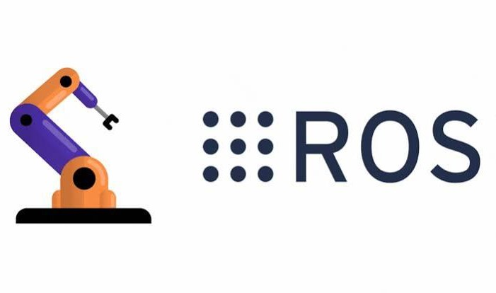
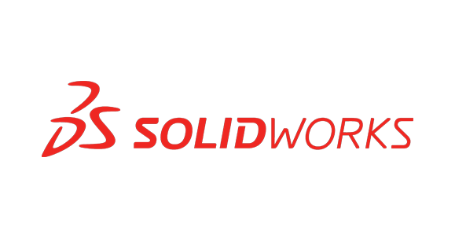
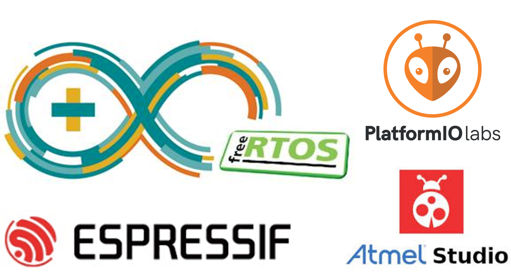
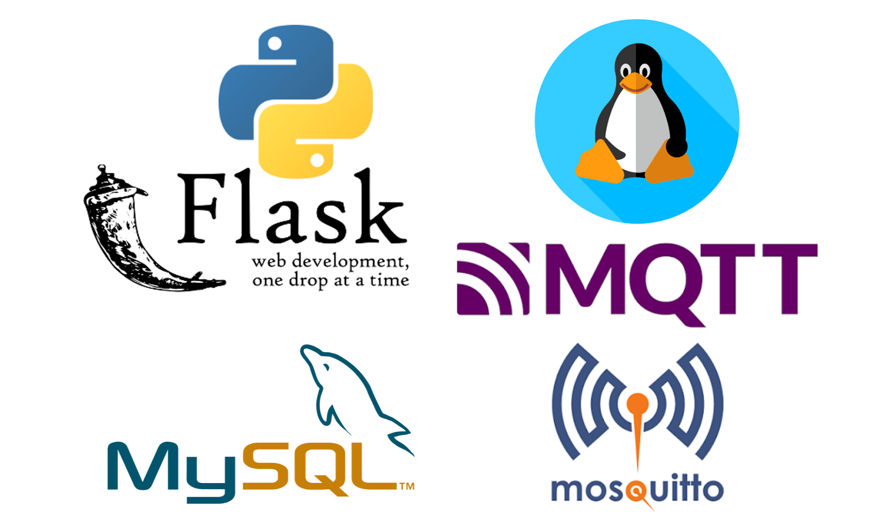
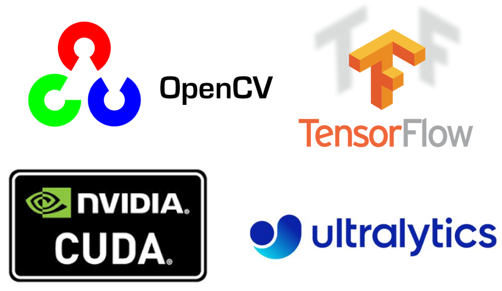
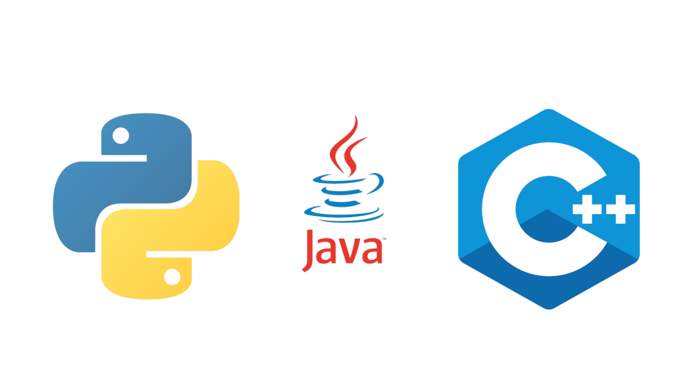

Sachintha Balasooriya
Robotics engineer taking autonomous platforms from initial mechanism to production code — currently architecting field-scouting rovers and closed-loop sericulture automation.
Full-stack hardware, firmware & software architecture
Robotics Systems Lead specializing in complete architectural ownership of autonomous systems. Experienced in driving complex multi-agent platforms, humanoid robotics, and industrial automation from initial concept through regional deployment.
Core technical strengths span FEA-driven structural design (SolidWorks/ANSYS), deterministic real-time firmware (ESP32/FreeRTOS), custom control algorithms, and ROS 2 navigation pipelines.
- Based in
- Osaka / Kyoto, Japan
- Currently
- Robotic Systems Lead Engineer, Pentalink Inc.
- Focus areas
- ROS 2 · Mechanical Design · Embedded Firmware
- Experience
- 3 years in robotics across SE & East Asia
Where I've built things
- Systems Architecture: Directing end-to-end mechanical, embedded, and software architecture for 6×6 AGVs in unstructured outdoor environments.
- Autonomy & Navigation: Leading the implementation of LiDAR-inertial SLAM pipelines, custom Nav2 plugins, and real-time terrain classification algorithms.
- Technical Stewardship: Serving as primary technical authority across engineering, investors, and vendors—authoring architecture docs and defining strategy to scale robotics operations.
- Full-Lifecycle Engineering: Owned full-stack mechatronics, firmware, and software development for multi-agent closed-loop automation platforms.
- Control & Middleware: Developed low-level driver protocols, kinematic motion profiling, and distributed Flask/MQTT coordination layers for real-time task allocation.
- Mechanism & Mechatronic Design: Designed specialized mechanisms for harsh atmospheric conditions, positive-pressure airlock transfer interfaces, and automated self-calibration routines.
- Mobile Platforms: Engineered Three different custom AGV prototypes for factory floor automation with active self-leveling suspension systems.
- Agricultural Robotics & Autonomy: Designed a novel 6×6 drivetrain from the ground up for a 30 kg-payload rover in partnership with an industrial agriculture firm—integrating LiDAR/GPS navigation across multiple revisions for rough-terrain coffee plantation operations.
- Precision Kinematics & Mechanisms: Developed a humanoid robot eye mechanism featuring a compliant, zero-backlash joint engineered for fast, damped human-motion mimicry.
- Curriculum & Instruction: Module lead for Analog Electronics, Robotics & Automation, and Embedded Systems—authoring course materials, lab curricula, and lecture series.
- Research & Advisory: Supervised student research within the Embedded Systems & Robotics group and served on advisory committees for regional STEM initiatives.
- Prosthetic Hardware R&D: Modeled and prototyped multi-articulating prosthetic arms, wrists, and fingers—improving structural integrity, safety, and control responsiveness.
- Product Optimization & Team Leadership: Audited legacy product lines to optimize unit costs and led a team of electronics technicians and fabricators through hardware iteration.
Selected work
2019 – Now. Field and agricultural robotics built across mechanical, firmware, and software.
Tools of the trade

Robotics & Autonomy
ROS / ROS 2, Nav2, SLAM (LiDAR, visual, depth), motion planning

Mechanical Design & Simulation
SolidWorks (9+ yrs) incl. topology optimization, FEA in Creo Parametric

Embedded & Electronics
PlatformIO, Atmel Studio, MPLAB X, Eagle CAD, Proteus, Siemens Simatic EKB, ABB RobotStudio

Systems & Backend
Flask, MQTT, SQL, Linux, Git

AI / Computer Vision
TensorFlow, PyTorch, YOLO (Ultralytics), OpenCV

Languages
C, C++, Python, Java
Academic foundation
M.Sc., Robotics & Mechatronics
B.Eng., Engineering (Honors)
Research articles
12 peer-reviewed publications in robotics, SLAM, and autonomous navigation (IEEE, RSJ).
Machine learning-based air pollution prediction model
Novel low-power NRF24L01 based wireless network design for autonomous robots
Novel adaptive control method for BLCD drive of electric bike for Vietnam environment
Ultra-Low Power Wireless Sensor Network for Air Quality Monitoring System
Forecasting model comparison for soil moisture to obtain optimal plant growth
Optimized Hardware Design of Low Power and Low Cost Self Driving Multi-Purposes Robotised Platform
Development of the smart localization techniques for low-power autonomous rover for predetermined environments
Innovative Path Planning Algorithm for an Autonomous Robot with Low Computational Cost
Autonomous Robotic Platform for Proximal Data Collection Amongst Foliage Utilizing an Anisotropically Flexible Manipulator
Development of a delta-type arm robot with anisotropic flexibility for sensitive applications
Developments in Laser Range Sensors to Improve Precision of High Speed, Continuous Motion Manufacturing Systems
Honors & awards
Let's talk about what you want to build.
Open to new projects and conversations in field robotics, embedded systems, and mechatronics.


.png)